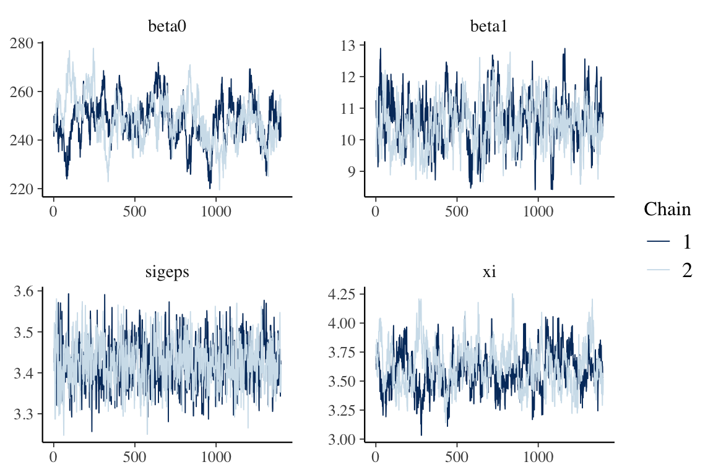
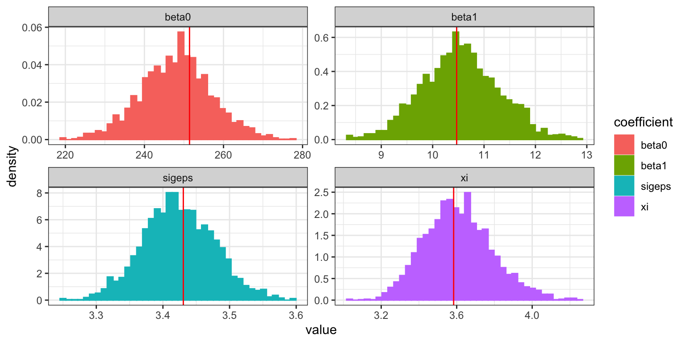

linear_mixed_effects_hmclearn.RmdThis vignette demonstrates fitting a Linear mixed effects regression model via Hamiltonian Monte Carlo (HMC) using the hmclearn package.
\[ \begin{aligned} y &= X\beta + Zu + \epsilon \\ u &\sim N(0, G) \\ \epsilon &\sim N(0, \sigma^2) \end{aligned} \]
library(hmclearn)
The user must define provide the design matrix directly for use in hmclearn. Our first step is to load the data and store the fixed effect design matrix \(X\), random effects design matrix \(Z\), and dependent variable vector \(y\).
We load drug sleepstudy data (Belenky et. al. 2003) and create the design matrices \(X\) and \(Z\) and dependent vector \(y\). For this model, the random effects design matrix \(Z\) is specified for a random intercept model.
library(lme4) #> Loading required package: Matrix library(Matrix) data(sleepstudy) # dependent variable y <- sleepstudy$Reaction yi.lst <- split(sleepstudy$Reaction, sleepstudy$Subject) # fixed effects ss2 <- sleepstudy ss2$int <- 1 ss2 <- ss2[, c(4, 1:3)] # rearrange columns to store in list Xi.lst <- split(ss2[, which(colnames(ss2) %in% c("Days", "int"))], ss2$Subject) Xi.lst <- lapply(Xi.lst, as.matrix) X <- as.matrix(do.call(rbind, Xi.lst)) # random effects n <- length(unique(sleepstudy$Subject)) d <- length(y)/n nrandom <- 1 ########## # intercept Z <- kronecker(diag(n), matrix(rep(1, d), ncol=1))
To compare results, we first fit a linear mixed effects model using the frequentist package lme4 (Bates et. al. 2015).
# random intercept ## linear mixed models - reference values from older code (fm1 <- lmer(Reaction ~ Days + (1 | Subject), sleepstudy, REML = FALSE)) #> Linear mixed model fit by maximum likelihood ['lmerMod'] #> Formula: Reaction ~ Days + (1 | Subject) #> Data: sleepstudy #> AIC BIC logLik deviance df.resid #> 1802.0786 1814.8505 -897.0393 1794.0786 176 #> Random effects: #> Groups Name Std.Dev. #> Subject (Intercept) 36.01 #> Residual 30.90 #> Number of obs: 180, groups: Subject, 18 #> Fixed Effects: #> (Intercept) Days #> 251.41 10.47 summary(fm1) #> Linear mixed model fit by maximum likelihood ['lmerMod'] #> Formula: Reaction ~ Days + (1 | Subject) #> Data: sleepstudy #> #> AIC BIC logLik deviance df.resid #> 1802.1 1814.9 -897.0 1794.1 176 #> #> Scaled residuals: #> Min 1Q Median 3Q Max #> -3.2347 -0.5544 0.0155 0.5257 4.2648 #> #> Random effects: #> Groups Name Variance Std.Dev. #> Subject (Intercept) 1296.9 36.01 #> Residual 954.5 30.90 #> Number of obs: 180, groups: Subject, 18 #> #> Fixed effects: #> Estimate Std. Error t value #> (Intercept) 251.4051 9.5062 26.45 #> Days 10.4673 0.8017 13.06 #> #> Correlation of Fixed Effects: #> (Intr) #> Days -0.380
The parameterization approach for this model uses a strategy recommended by Betancourt, Girolami (2013) to facilitate more efficient sampling in HMC.
Further, the uniform parameterization of the variance parameters is replaced by a half-t family of distributions per Gelman (2006), Prior distributions for Variance parameters in hierarchical models. This parameterization is well-behaved around 0, in contrast to inverse gamma, and provides flexibility for more informed priors than a uniform distribution.
We select a parameterization of \(G\) such that the likelihood and its gradient can be derived for HMC. To this end, we uses LDL decomposition of \(G\) to form a flexibile parameterization that can easily handle restrictions (Chan, Jelizkov 2009).
\[ \begin{aligned} u &\sim N(0, G) \\ G &= L D L^T \\ &= L D^{1/2} D^{1/2} L^T \\ \end{aligned} \]
Let \(\lambda_k\) where \(k = 1, ... p\) denote the diagonal entries of \(D^{1/2}\) and let \(a_{kj}\) where \(1 \leq j < k \leq p\) denote free elements of lower unitrangular matrix \(L\)
\[ D^{1/2} := \begin{pmatrix} \lambda_1 & 0 & ... & 0 \\ 0 & \lambda_2 & 0 ... & 0 \\ ... & ... & ... & ... \\ 0 & 0 & ... & \lambda_p \end{pmatrix}, L := \begin{pmatrix} 1 & 0 & 0 & ... & 0 \\ a_{21} & 1 & 0 & ... & 0 \\ a_{31} & a_{32} & 1 & ... & ... \\ ... & ... & ... & ... & ... \\ a_{p1} & a_{p2} & ... & ... & 1 \\ \end{pmatrix} \]
Also define \(\lambda := (\lambda_1, ..., \lambda_p)^T\) and \(a_k := (a_{k1}, ..., a_{k, k-1})^T\) and \(a := (a_2^T, ..., a_p^T)^T\)
Consider priors where \(k = 1...p\). The prior for \(\lambda_k\) is half-t per Gelman (2006).
\[ \begin{aligned} p(\lambda_k) &\sim \left(1 + \frac{1}{\nu}\left(\frac{\lambda_k}{A} \right)^2 \right)^{-(\nu+1)/2} \\ a|\lambda &\sim N(a_0, A_0) \end{aligned} \]
The hyperparameter \(a_0\) does not need to be zero, and \(A_0\) can be correlated and may depend on \(\lambda\). In this model, we define \(a\) independent of \(\lambda\).
Per Betancourt, Girolami (2013), we re-parameterize \(u\) using a standard normal parameterization we define as \(\tau = (\tau_1, ..., \tau_q)\). Here, \(u\) is a deterministic function of \(G\) and \(\tau\).
\[ \begin{aligned} \tau &\sim N(0, I_q) \\ u &:= L D^{1/2} \tau \\ &\sim N(0, LD^{1/2} I (L D^{1/2})^T) \\ &\sim N(0, L D^{1/2} D^{1/2} L^T) \\ &\sim N(0, G) \end{aligned} \]
The distribution of \(u\) therefore does not change with this parameterization. The intent of our re-parameterization is to allow \(G\) and \(\tau\) to be largely independent in the MCMC sampling.
First, we specify the likelihood and log-likelihood
\[ \begin{aligned} p(y | \beta, u_1, ..., u_c, \sigma_\epsilon^2) &\propto (\sigma_\epsilon^2)^{-n/2} e^{-\frac{1}{2\sigma_\epsilon^2}(y - X\beta - Zu)^T (y - X\beta - Zu)} \\ \log p(y | \beta, u_1, ..., u_c, \sigma_\epsilon^2) &\propto -{n}\log(\sigma_\epsilon) -\frac{1}{2\sigma_\epsilon^2}(y - X\beta - Zu)^T (y - X\beta - Zu) \end{aligned} \]
The posterior is defined for priors on \(\beta\), \(u\), \(\sigma_\epsilon^2\), and \(G\), with dependent vector \(y\) and design matrices \(X\) and \(Z\).
\[ \begin{aligned} p(\beta, u, \sigma_\epsilon^2, G | y, X, Z) &\propto p(y | \beta, u, \sigma_\epsilon^2, G) p(\beta, u, \sigma_\epsilon^2, G) \\ &\propto p(y | \beta, u, \sigma_\epsilon^2, G) p(\beta) p(\sigma_\epsilon^2) p(u, G) \\ &\propto p(y | \beta, u, \sigma_\epsilon^2, G) p(\beta) p(\sigma_\epsilon^2) p(u | G) p(G) \\ \log p(\beta, u, \sigma_\epsilon^2, G | y, X, Z) &\propto \log p(y | \beta, u, \sigma_\epsilon^2, G) + \log p(\beta) + \log p(\sigma_\epsilon^2)+ \log p(u|G) + \log p(G) \\ \log p(\beta, \sigma_\epsilon, \tau, \lambda_1...\lambda_q,a | y, X, Z) &\propto \log p(y | \beta, \tau, \sigma_\epsilon, \lambda, a) + \log p(\beta) + \log p(\sigma_\epsilon)+ \log p(\tau) + \log p(\lambda) + \log p(a) \end{aligned} \]
We parameterize all standard deviations from the half-t family.
\[ \begin{aligned} p(\beta) &\propto N(0, BI) \\ p(\sigma_\epsilon) &\sim \left(1 + \frac{1}{\nu_\epsilon}\left(\frac{\sigma_\epsilon}{A_\epsilon} \right)^2 \right)^{-(\nu_\epsilon+1)/2} \\ p(\lambda_k) &\sim \left(1 + \frac{1}{\nu_{\lambda_k}}\left(\frac{\lambda_k}{A_{\lambda_k}} \right)^2 \right)^{-(\nu_{\lambda_k}+1)/2} \\ a &\sim N(0, A_a) \end{aligned} \]
We want proposals of \(\sigma_\epsilon^2\) over the real number line. Therfore we derive the distribution of the transformed parameter \(\gamma\) based on a change of variable
\[ \begin{aligned} \gamma &:= \log \sigma_\epsilon \\ e^\gamma &= \sigma_\epsilon \end{aligned} \]
We need to compute the Jacobian of the transformation
\[ \begin{aligned} p_{\gamma}(\gamma) &= p_{\sigma_\epsilon}(g^{-1}(\gamma))\lvert \frac{d\sigma_\epsilon}{d\gamma} \rvert \\ &= \left(1 + \frac{1}{\nu_\epsilon} \left(\frac{e^\gamma}{A_\epsilon} \right)^2 \right)^{-\frac{\nu_\epsilon +1}{2}} e^{\gamma} \\ &= \left(1 + \frac{1}{\nu_\epsilon} \frac{e^{2\gamma}}{A_\epsilon^2} \right)^{-\frac{\nu_\epsilon +1}{2}} e^{\gamma} \\ \log p_{\gamma}(\gamma) &\propto -\frac{\nu_\epsilon+1}{2}\log\left(1 + \frac{1}{\nu_\epsilon} \frac{e^{2\gamma}}{A_\epsilon^2} \right) + \gamma \end{aligned} \]
We have hyperpriors \(\lambda\) and \(a\) for \(G\).
Re-parameterize \(\xi_k = \log \lambda_k\) and \(e^{\xi_k} = \lambda_k\)
Recall that we parameterized \(\lambda_k\) as uniform
\[ \begin{aligned} \lambda_k &\sim \text{half-t}(\nu_{\lambda_k}, A_{\lambda_k}) \\ p_{\xi_k}(\xi_k) &= p_{\lambda_k}(g^{-1}(\xi_k)) \left\lvert \frac{d\lambda_k}{d\xi_k} \right\rvert \\ &= p_{\lambda_k} (e^{\xi_k})\lvert e^{\xi_k}\rvert \\ &= \left(1 + \frac{1}{\nu_{\lambda_k}} \frac{e^{2\xi_k}}{A_{\lambda_k}^2}\right)^{-\frac{\nu_{\lambda_k}+1}{2}}e^{\xi_k} \\ \log p(\xi_k) &\propto -\frac{\nu_{\lambda_k}+1}{2}\log\left(1 + \frac{1}{\nu_{\lambda_k}} \frac{e^{2\xi_k}}{A_{\lambda_k}^2}\right)+ \xi_k \end{aligned} \]
Leveraging an idea from Chan, Jeliazkov (2009) MCMC estimation of restricted covariance matrices
We write the matrix form of \(u = L D^{1/2} \tau\) in a form with a parameter vector \(a\) by which the gradient can be computed directly
\[ \begin{aligned} u &= L D^{1/2} \tau \\ &= \widetilde{\tau} + \widetilde{T}a \\ &=\begin{pmatrix} e^\xi_1\tau_1 \\ e^\xi_2\tau_2 \\ e^\xi_3\tau_3 \\ ... \\ ... \\ e^\xi_q\tau_q \end{pmatrix} + \begin{pmatrix} 0 & ... & & & & & & ... & 0 \\ e^{\xi_1}\tau_1 & 0 & ... & & & & & & ... \\ 0 & e^{\xi_1}\tau_1 & e^{\xi_2}\tau_2 & 0 & ... & & & & 0 \\ 0 & ... & 0 & e^{\xi_1}\tau_1 & e^{\xi_2}\tau_2 & e^{\xi_3}\tau_3 & 0 & ... & ... \\ ... & ... & ... & ... & ... & ... & ... & ... & ... \\ 0 & ... & ... & 0 & ... & ... & e^{\xi_1}\tau_1 & ... & e^{\xi_q}\tau_q \\ \end{pmatrix} \begin{pmatrix} a_{21} \\ a_{31} \\ a_{32} \\ ... \\ ... \\ a_{q,q-1} \end{pmatrix} \end{aligned} \]
Since we decompose \(G\) using \(L D L^T\). We make use of the determinant property of a square matrix, where the determinant of a square matrix is equal to the determinant of its transpose. Also, from above \(\lvert L \rvert = 1\)
\[ \begin{aligned} \lvert G \rvert &= \lvert L D L^T \rvert \\ &= \lvert L \rvert \lvert D \rvert \lvert L^T \rvert \\ &= \lvert D \rvert \\ &= \prod_{k=1}^q e^{2\xi_k} \\ &= e^{2\sum_{k=1}^q \xi_k} \\ \log \lvert G \rvert &= 2\sum_{k=1}^q \xi_k \end{aligned} \]
Assign relatively uniformative prior for \(a\)
\[ \begin{aligned} a_k &\sim N(0, A) \\ p(a_k) &\propto \lvert A \rvert^{-1/2} e^{-\frac{1}{2} a_k^T A^{-1} a_k} \\ \log p(a_k) &\propto -\frac{1}{2}a_k^T A^{-1} a_k \end{aligned} \]
Recall that the prior for \(\tau\) is standard Normal (multivariate)
\[ \begin{aligned} \tau &\sim N(0, I) \\ p(\tau) &\sim e^{-\frac{1}{2}\tau^T I \tau} \\ \log p(\tau) &\sim -\frac{1}{2} \tau^T \tau \end{aligned} \]
Finally, we write the full log posterior
\[ \begin{aligned} \log p(\beta, \sigma_\epsilon, \tau, \lambda_1...\lambda_q,a | y, X, Z) &\propto \log p(y | \beta, \tau, \sigma_\epsilon, \lambda, a) + \log p(\beta) + \log p(\sigma_\epsilon)+ \log p(\tau) + \log p(\lambda) + \log p(a) \\ \log p(\beta, \gamma, \tau, \xi_1...\xi_q,a | y, X, Z) &\propto \log p(y | \beta, \tau, \gamma, \xi, a) + \log p(\beta) + \log p(\gamma)+ \log p(\tau) + \log p(\xi) + \log p(a) \\ &\propto -n\gamma -\frac{e^{-2\gamma}}{2}(y - X\beta - Zu)^T (y - X\beta - Zu) - \frac{1}{2}\beta^T\Sigma_\beta^{-1}\beta \\ &-\frac{\nu_\epsilon+1}{2}\log\left(1 + \frac{1}{\nu_\epsilon} \frac{e^{2\gamma}}{A_\epsilon^2} \right) + \gamma -\frac{1}{2} a^T A^{-1} a -\frac{1}{2} \tau^T \tau\\ &-\sum_{k=1}^q \left(\frac{\nu_{\lambda_k}+1}{2}\log\left(1 + \frac{1}{\nu_{\lambda_k}} \frac{e^{2\xi_k}}{A_{\lambda_k}^2}\right)+ \xi_k\right)\\ &\propto -n\gamma -\frac{e^{-2\gamma}}{2}(y - X\beta - ZL D^{1/2}\tau)^T (y - X\beta - ZL D^{1/2}\tau) - \frac{1}{2}\beta^T\Sigma_\beta^{-1}\beta \\ &-\frac{\nu_\epsilon+1}{2}\log\left(1 + \frac{1}{\nu_\epsilon} \frac{e^{2\gamma}}{A_\epsilon^2} \right) + \gamma -\frac{1}{2} a^T A^{-1} a -\frac{1}{2} \tau^T \tau\\ &-\sum_{k=1}^q \left(\frac{\nu_{\lambda_k}+1}{2}\log\left(1 + \frac{1}{\nu_{\lambda_k}} \frac{e^{2\xi_k}}{A_{\lambda_k}^2}\right)+ \xi_k\right)\\ \end{aligned} \]
Derive the partial derivative of \(\tau\)
\[ \begin{aligned} \frac{\partial l}{\partial\tau} &\propto \frac{\partial}{\partial\tau}\left(-\frac{e^{-2\gamma}}{2}(y-X\beta-ZLD^{1/2}\tau)^T(y-X\beta-ZLD^{1/2}\tau) - \frac{1}{2}\tau^T\tau\right) \\ &\propto e^{-2\gamma}(ZLD^{1/2})^T (y-X\beta-ZLD^{1/2}\tau) - \tau \\ &\propto e^{-2\gamma} D^{1/2}L^T Z^T(y - X\beta - ZLD^{1/2}\tau) - 1 \end{aligned} \]
Derive the partial derivative of \(\xi_k\). Here \(J^{kk}\) is the singular entry matrix of \(e^{\xi_k}\) at \(kk\), with the remaining matrix elements zero.
\[ \begin{aligned} \frac{\partial l}{\partial\xi_k} &\propto \frac{\partial}{\partial\xi_k}\left(-\frac{e^{-2\gamma}}{2}(y-X\beta-ZLD^{1/2}\tau)^T(y - X\beta-ZLD^{1/2}\tau) - \frac{\nu_{\lambda_k}+1}{2}\log\left(1 + \frac{1}{\nu_{\lambda_k}}\frac{e^{2\xi_k}}{A_{\lambda_k}^2} \right) +\xi_k\right) \\ &\propto e^{-2\gamma} \text{tr}\left((y - X\beta - ZLD^{1/2}\tau) (Z L J^{kk} \tau)^T\right) - (\nu_{\lambda_k}+1)\frac{1}{1 + \nu_{\lambda_k}A_{\lambda_k}^2 e^{-2\xi_k}}+1 \end{aligned} \]
Derive the partial derivative with respect to \(a\).
Note that the following are equivalent
\[ \begin{aligned} L D^{1/2}\tau = D^{1/2} \tau + \widetilde{T} a \end{aligned} \]
Therefore, the portion of the log likelihood dependent on \(a\) becomes
\[ \begin{aligned} \frac{\partial l}{\partial a} &\propto \frac{\partial}{\partial a}\left(-\frac{e^{-2\gamma}}{2}(y-X\beta - \widetilde\tau - \widetilde{T}a)^T(y-X\beta - \widetilde\tau - \widetilde{T}a) -\frac{1}{2}a^T A^{-1} a \right) \\ &\propto e^{-2\gamma} \widetilde{T}^T(y-X\beta-\widetilde\tau - \widetilde{T}a) - A^{-1}a \end{aligned} \]
The gradient of full log posterior can now be specified
\[ \begin{aligned} \log p(\beta, \gamma, \tau, \xi_1...\xi_q,a | y, X, Z) &\propto \log p(y | \beta, \tau, \gamma, \xi, a) + \log p(\beta) + \log p(\gamma)+ \log p(\tau) + \log p(\xi) + \log p(a) \\ &\propto -n\gamma -\frac{e^{-2\gamma}}{2}(y - X\beta - ZLD^{1/2}\tau)^T (y - X\beta - ZLD^{1/2}\tau) -\frac{1}{2}\beta^T\Sigma_\beta^{-1}\beta\\ &-\frac{\nu_\epsilon+1}{2}\log\left(1 + \frac{1}{\nu_\epsilon} \frac{e^{2\gamma}}{A_\epsilon^2} \right) + \gamma -\frac{1}{2} a^T A^{-1} a -\frac{1}{2} \tau^T \tau\\ &-\sum_{k=1}^q \left(\frac{\nu_{\lambda_k}+1}{2}\log\left(1 + \frac{1}{\nu_{\lambda_k}} \frac{e^{2\xi_k}}{A_{\lambda_k}^2}\right)+ \xi_k\right)\\ \frac{\partial l}{\partial\beta} &= e^{-2\gamma}X^T(y-X\beta-ZLD^{1/2}\tau)-\Sigma_\beta^{-1}\beta \\ \frac{\partial l}{\partial\gamma} &= -(n-1)+e^{-2\gamma}(y-X\beta-ZLD^{1/2}\tau)^T(y-X\beta-ZLD^{1/2}\tau) \\ &-(\nu_\epsilon + 1) \frac{1}{1 + \nu_\epsilon A_\epsilon^2 e^{-2\gamma}} \\ \frac{\partial l}{\partial\tau} &= e^{-2\gamma} D^{1/2}L^T Z^T(y - X\beta - ZLD^{1/2}\tau) - \tau\\ \frac{\partial l}{\partial\xi_k} &= e^{-2\gamma}\text{tr}\left((y - X\beta - ZLD^{1/2}\tau) (Z L J^{kk} \tau)^T\right) - (\nu_{\lambda_k}+1)\frac{1}{1 + \nu_{\lambda_k}A_{\lambda_k}^2 e^{-2\xi_k}}+1 \\ \frac{\partial l}{\partial a} &= e^{-2\gamma}\widetilde{T}^T Z^T(y - X\beta-ZD^{1/2}\tau - Z\widetilde{T}a) - A^{-1}a \end{aligned} \]
Run HMC for linear mixed effects regression model
N <- 2e3 theta.init <- c(0, 1, # beta rep(0, 18), # tau 3, # gamma (log sig2eps) 1) # xi vnames <- c(paste0("beta", 0:1), paste0("tau_int", 1:18), "sigeps", "xi") eps_vals <- c(5e-1, 5e-2, rep(3e-2, 18), 6e-3, 5e-2) set.seed(41132) t1.hmc <- Sys.time() f_hmc <- hmc(N = N, theta.init = theta.init, epsilon = eps_vals, L = 10, logPOSTERIOR = lmm_posterior, glogPOSTERIOR = g_lmm_posterior, varnames = vnames, param=list(y = y, X=X, Z=Z, n=n, d=d, nrandom=1, nugamma=4, Agamma=1, nuxi=1, Axi=1, sig2beta=1e5), parallel=FALSE, chains=2) t2.hmc <- Sys.time() t2.hmc - t1.hmc #> Time difference of 1.135118 mins
The acceptance ratio for each of the HMC chains is sufficiently high for an efficient simulation.
f_hmc$accept/N #> [1] 0.814 0.805
Trace plots provide a visual indication of stationarity. These plots indicate that the MCMC chains are reasonably stationary.
mcmc_trace(f_hmc, burnin=trunc(N*.3), pars=c("beta0", "beta1", "sigeps", "xi"))

The posterior quantiles are summarized after removing an initial burnin period.
summary(f_hmc, burnin=trunc(N*.3)) #> Summary of MCMC simulation #> 2.5% 5% 25% 50% 75% #> beta0 230.00128348 2.327944e+02 241.89217307 248.352552693 253.7295718 #> beta1 9.07725919 9.328444e+00 10.04105950 10.532795892 11.0469884 #> tau_int1 0.52735664 6.213171e-01 0.93359832 1.167452224 1.4397057 #> tau_int2 -2.99320429 -2.809036e+00 -2.33009109 -2.020047420 -1.7439651 #> tau_int3 -2.51312415 -2.366965e+00 -1.92402317 -1.628754913 -1.3584329 #> tau_int4 -0.45362162 -3.449023e-01 -0.02246452 0.195555766 0.4249330 #> tau_int5 -0.23646113 -1.601095e-01 0.14702177 0.357780409 0.5712771 #> tau_int6 -0.31019917 -2.106870e-01 0.08983899 0.288832127 0.4998416 #> tau_int7 -0.10531375 3.075246e-04 0.32130309 0.521949974 0.7341278 #> tau_int8 -0.63986239 -5.250118e-01 -0.20483523 -0.002182091 0.1992217 #> tau_int9 -1.91743204 -1.799009e+00 -1.41391783 -1.147736157 -0.8954078 #> tau_int10 1.23663902 1.348615e+00 1.73018898 2.013683784 2.3463818 #> tau_int11 -1.16431522 -1.053962e+00 -0.71512168 -0.503604123 -0.2805310 #> tau_int12 -0.18447810 -5.984324e-02 0.24471072 0.463964937 0.6880517 #> tau_int13 -0.79561699 -6.890123e-01 -0.34115241 -0.107625210 0.1020035 #> tau_int14 0.40947078 5.277042e-01 0.82337594 1.045747168 1.2923674 #> tau_int15 -0.36458092 -2.675430e-01 0.05652652 0.263111730 0.5034956 #> tau_int16 -0.74043732 -6.108352e-01 -0.30877607 -0.079167619 0.1401596 #> tau_int17 -0.64757366 -5.363645e-01 -0.23346035 -0.008004814 0.1981716 #> tau_int18 -0.08046339 3.483494e-02 0.35543901 0.554203574 0.7780795 #> sigeps 3.31911275 3.335228e+00 3.38724086 3.420776537 3.4602352 #> xi 3.27813272 3.330004e+00 3.48419242 3.599906725 3.7252319 #> 95% 97.5% rhat #> beta0 263.17481417 266.1468368 1.0001273 #> beta1 11.82741944 12.0676729 1.0152341 #> tau_int1 1.83370042 1.9842790 1.0006277 #> tau_int2 -1.33534270 -1.2014881 1.0136249 #> tau_int3 -0.99843222 -0.8825962 1.0033839 #> tau_int4 0.74445445 0.8650832 1.0040567 #> tau_int5 0.94290556 1.0473653 0.9996973 #> tau_int6 0.86177250 0.9860583 1.0019383 #> tau_int7 1.06812066 1.1716498 1.0004302 #> tau_int8 0.50840065 0.5988963 0.9997383 #> tau_int9 -0.52859063 -0.3619272 1.0020873 #> tau_int10 2.79418829 2.9351339 1.0036116 #> tau_int11 0.03102414 0.1287776 1.0047227 #> tau_int12 1.02133903 1.1617360 0.9996900 #> tau_int13 0.41003730 0.4973619 1.0025572 #> tau_int14 1.67376662 1.8118583 1.0016279 #> tau_int15 0.84116476 0.9484060 0.9998920 #> tau_int16 0.47023929 0.5489269 0.9996697 #> tau_int17 0.50581182 0.6005836 1.0002093 #> tau_int18 1.15456654 1.2893995 1.0051712 #> sigeps 3.51289370 3.5331037 0.9998044 #> xi 3.92390056 3.9952374 1.0162299
Histograms of the posterior distribution show that Bayesian parameter estimates align with frequentist estimates. The cols parameter specifies the parameters to be displayed in diagplots, based on the order provided to the hmc function.
beta.freq <- fixef(fm1) xi.freq <- 1/2*log(VarCorr(fm1)$Subject[1]) sigeps.freq <- log(sigma(fm1)) theta.freq <- c(beta.freq, sigeps.freq, xi.freq) diagplots(f_hmc, burnin=trunc(N*.3), comparison.theta=theta.freq, cols=c(1:2, 21:22)) #> $histogram

Gregory Belenky, Nancy J. Wesensten, David R. Thorne, Maria L. Thomas, Helen C. Sing, Daniel P. Redmond, Michael B. Russo and Thomas J. Balkin (2003) Patterns of performance degradation and restoration during sleep restriction and subsequent recovery: a sleep dose-response study. Journal of Sleep Research 12, 1–12.
Bates, D., M"{a}chler, M., Bolker, B., & Walker, S. (2015). Fitting linear mixed-effects models using lme4. Journal of Statistical Software 67(1)
Betancourt, M., & Girolami, M. (2015). Hamiltonian Monte Carlo for hierarchical models. Current trends in Bayesian methodology with applications, 79(30), 2-4.
Gelman, Andrew. (2006) “Prior distributions for variance parameters in hierarchical models (comment on article by Browne and Draper).” Bayesian analysis 1.3: 515-534.
Chan, J. C. C., & Jeliazkov, I. (2009). MCMC estimation of restricted covariance matrices. Journal of Computational and Graphical Statistics, 18(2), 457-480.
Agresti, A. (2015). Foundations of linear and generalized linear models. John Wiley & Sons. ISBN: 978-1-118-73003-4